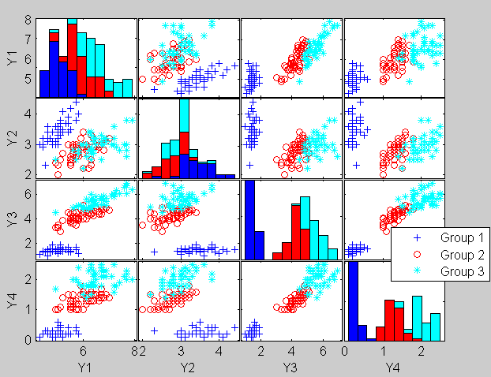
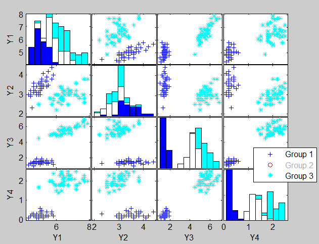
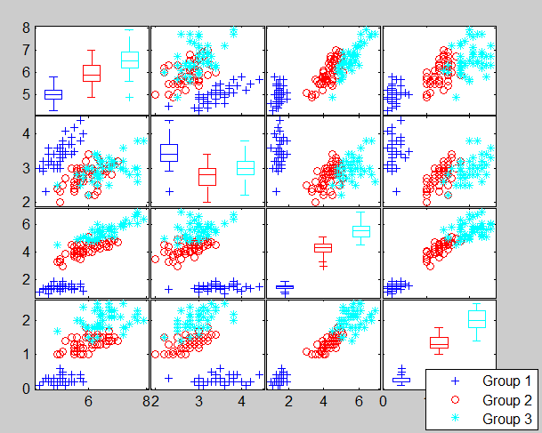
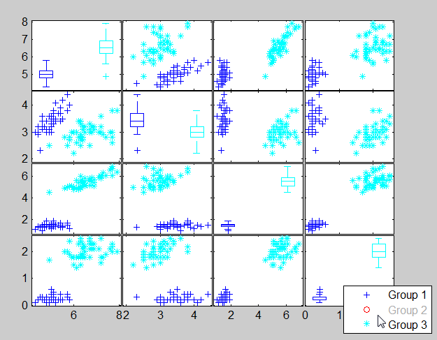
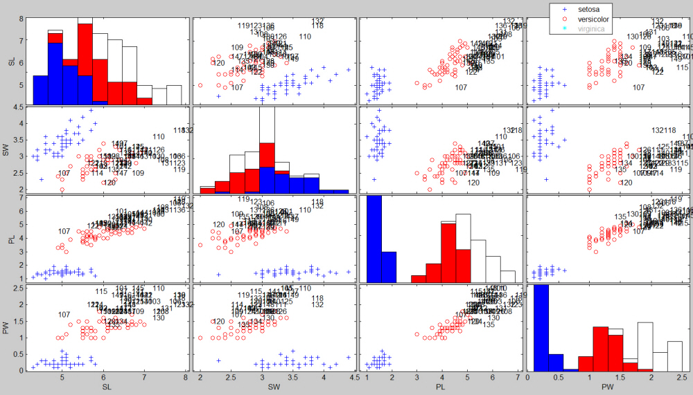

| Flexible Statistics Data Analysis Toolbox™ |
|
Scatterplot matrix with dynamic scatters and histograms
[H,AX,BigAx] = spmplot(Y,group)
[H,AX,BigAx] = spmplot(Y,group,plo)
[H,AX,BigAx] = spmplot(Y,group,plo,dispopt)
spmplot(Y,group) produces a scatter plot matrix with dynamic scatters and histograms (or boxplots) separated for each group on the main diagonal. Clicking on the entry of the legend it is possible to hide/show the elements belonging to the corresponding group both in each scatter and in the bins of the histograms along the main diagonal
Y is the n-by-v matrix which contains (in the columns) the values of v variables.
group vector with n elements, grouping variable that determines the marker and color assigned to each point. It can be a categorical variable, vector, string matrix, or cell array of strings.
spmplot(Y,group,[],dispopt) enables to add on the main diagonal of the scatter plot matrix stacked histograms, or univariate boxplots for each of the groups.
The output follows the one of gplotmatrix in the statistics toolbox. In other words
[h,ax,bigax] = spmplot(...) returns three arrays of handles. h is an array of handles to the lines on the graphs. The array's third dimension corresponds to groups in G. ax is a matrix of handles to the axes of the individual plots. ax contains one extra row of handles to invisible axes in which the histograms are plotted. bigax is a handle to big (invisible) axes framing the entire plot matrix. bigax is fixed to point to the current axes, so a subsequent title, xlabel, or ylabel command will produce labels that are centered with respect to the entire plot matrix.
Optional input argument plo is described in the table below
| Parameter | Value |
|---|---|
| 'plo' |
Scalar or structure.
|
In the first example we plot the iris data (in the FSDA repository) using all default options
Y=load('ir.txt');
gr=repmat(1:3,50,1);
group=gr(:);
spmplot(Y,group)
The output is given below

Clicking for example on the entry Group 2 in the legend, it is possible to hide the second group both in the bivariate scatters and in the histograms (see the output below)

If univariate boxplotx, instead of histograms are required on the main diagonal, it is possible to use the instruction below:
Y=load('ir.txt');
gr=repmat(1:3,50,1);
group=gr(:);
spmplot(Y,group,[],'box')

Clicking for example on the entry Group 2 in the legend, it is possible to hide the second group both in the bivariate scatters and in the boxplots (see the output below)

Alternatively, the user can use the iris data from the Statistics toolbox
load fisheriris; spmplot(meas,species)
To show the iris data, adding the name of the variables to the scatter plot matrix and replacing in a dynamic way numbers with symbols for iris virginica, it is sufficient to use the following code
load fisheriris;
plo=struct;
plo.labeladd='1'
plo.nameY={'SL','SW','PL','PW'}
spmplot(meas,species,plo)
and click on the entry "virginica" of the legend. The output is given below:

|
|
sn.html | sreg.html |
|